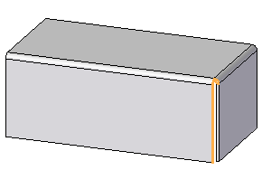
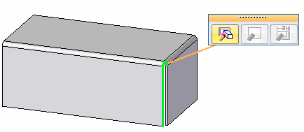
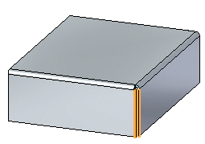
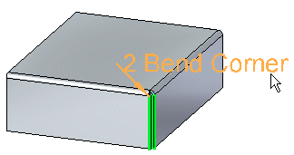

Edit a closed 2–bend corner
Edit an ordered closed 2 bend corner
-
Select a closed corner.

-
Select the edit definition button.

-
On the Close 2–Bend Corner command bar, click the Select Bends step.
-
Use the command bar optons to edit the close corner and press Enter.
-
On the command bar, click Finish to save the edits.
Edit a synchronous closed 2–bend corner
-
Select a closed corner.

-
Select the edit definition handle.

-
Use the command bar or dynamic edit control to edit the close corner and press Enter.
-
Click to save the edits.
How do I
Close the corner where two flanges meetLearn more
Closing cornersLook up more details
Close 2-Bend Corner commandClose 2-Bend Corner command bar
Close 2-Bend Corner command bar